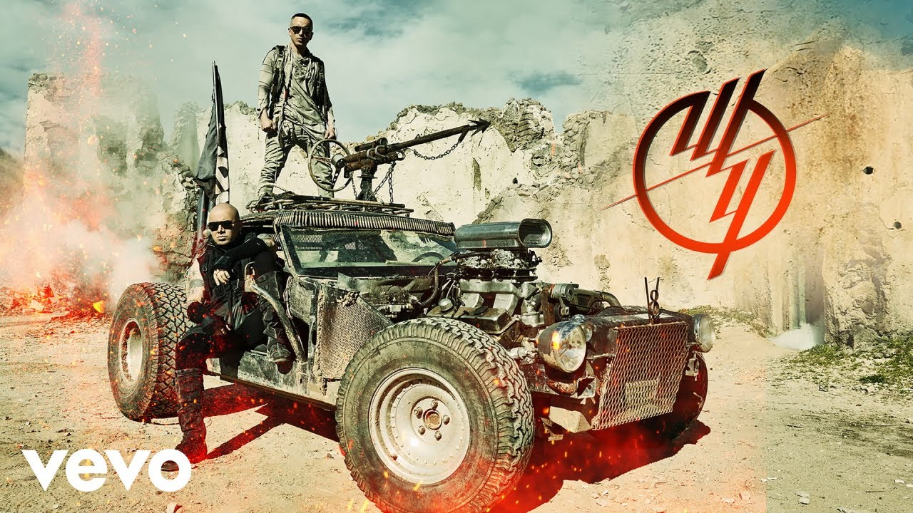

Wisin & Yandel

Año de inicio/finalización:
El dúo se formó en el municipio de Cayey en 1998 y tomó una pausa en 2013, hasta su reintegro en 2018.
Canción Más Popular:
Algo Me Gusta De Ti es el segundo sencillo del dúo puertorriqueño Wisin & Yandel de su álbum Líderes, en colaboración con los artistas estadounidenses Chris Brown y T-Pain.
10 canciones más escuchadas:

Álbum más escuchado/Vendido:
El álbum más escuchado y vendido de Wisin & Yandel es "Los Vaqueros, El Regreso", su séptimo álbum de estudio. Fue lanzado el 25 de enero de 2011, consolidando su posición como uno de los dúos más influyentes del reguetón.
Primer Concierto:
Su primer concierto conocido se celebró el 31 de marzo de 2017 en el Anfiteatro Altos de Chavón, en República Dominicana, marcando su retorno a los escenarios con gran éxito y entusiasmo de los fans.
Último concierto:
Su último concierto registrado fue en 2023 como parte del tour "La Última Misión World Tour", donde Wisin & Yandel cerraron con broche de oro una exitosa carrera musical.
Primera Canción:
"Como Antes" es un sencillo del cantautor puertorriqueño Yandel en colaboración con el rapero puertorriqueño Wisin. Esta canción marcó su reunión musical después de cinco años de pausa como dúo, destacándose por su impacto y resonancia en el público.
Última canción:
"Miami" fue su última canción lanzada junto a Jennifer Lopez, incluida en su último álbum de estudio. Esta colaboración representó un hito en su carrera y fue bien recibida por sus seguidores y la crítica especializada.
Primer álbum:
En el año 2000, Wisin & Yandel lanzaron su primer álbum de estudio titulado "Los Reyes del Nuevo Milenio", donde colaboraron con artistas destacados como Tempo y Baby Rasta & Gringo, estableciéndose como pioneros del reguetón.
Último álbum:
"La Última Misión" es el décimo y último álbum de estudio de Wisin & Yandel, publicado el 30 de septiembre de 2022. Este álbum cerró un ciclo en la carrera del dúo, dejando un legado musical significativo en la historia del reguetón.

Biografía:
Wisin & Yandel es un dúo musical puertorriqueño compuesto por Juan Luis Morera, conocido como "Wisin", y Llandel Veguilla, conocido como "Yandel". Han sido figuras clave en la popularización y evolución del género reguetón, alcanzando un éxito internacional y dejando un impacto duradero en la industria musical.